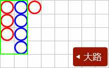
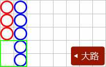
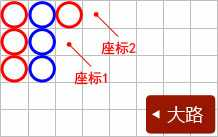
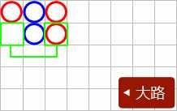
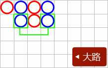
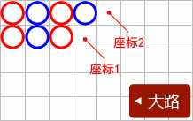
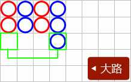
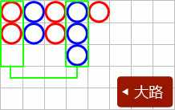
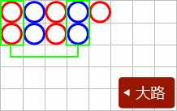

百家乐
简介:
长期以来，百家乐是亚洲、欧洲和拉丁美洲最受欢迎的游戏之一，玩法简单，却刺激紧张!
如何胜出:
百家乐中将发两份牌 "庄家" 和 "闲家"，总数得9点或最接近9 点的一家胜出。
操作及下注指南:
1. 点击下注的筹码，再点击桌上下注任何一块( 闲家、庄家或平局)。
2. 闲家和庄家将获发两张牌，加起来等於10作0点，总和超过9，则只算总数中的个位。
3. 任何一家拿到9点（天生赢家），牌局就算结束，不再补牌。
4. 派出两张牌後，如果任何一手牌的头两张牌的牌面为0至7，将依照补牌规则多发一张牌，不可以任选补牌。
5. 没有任何一手牌获得超过三张牌。
游戏玩法
本游戏采用8副牌（每副牌52张）来进行，游戏牌数合计416张。 “闲家”“庄家”各先派两张牌，以“闲家”先发，如第一轮未分出胜负需再按“牌例”发第二轮的牌，最多每方3张牌，谁最接近9点即为胜方，而相同点数即和局
游戏规则:
1. 点数计算
| 牌面 | 点数 |
|---|---|
| 2 至 9 | 根据其数值显示的点数 |
| Ace | 1 |
| K或Q或J或10 | 0 |
*当任何一家头两张牌的点数总和为8或9，就称为(天生赢家)。
*派出两张牌後，如果需要补牌，将依照博牌规则向需要补牌方多发一张牌
例子:
4 + 2 + 6 = 2
5 + 6 + 8 = 9
10 + 10 + 10 = 0
2. 补牌规则:
闲家∶
| 闲两牌合计点数 | (闲家) |
|---|---|
| 0 | 必须博牌 |
| 1 | 必须博牌 |
| 2 | 必须博牌 |
| 3 | 必须博牌 |
| 4 | 必须博牌 |
| 5 | 必须博牌 |
| 6 | 不得博牌 |
| 7 | 不得博牌 |
| 8 | 例牌，即定胜负 |
| 9 | 例牌，即定胜负 |
庄家∶
| 庄两牌合计点数 | (庄家) |
|---|---|
| 0 | 必须博牌 |
| 1 | 必须博牌 |
| 2 | 必须博牌 |
| 3 | 若闲家博得第三张牌是8点，庄家不得博牌 |
| 4 | 若闲家博得第三张牌是0，1，8，9点， 庄家不得博牌 |
| 5 | 若闲家博得第三张牌是0，1，2，3，8，9点， 庄家不得博牌 |
| 6 | 若闲家博得第三张牌是6 或 7点，庄家必须博牌 |
| 7 | 不得博牌 |
| 8 | 例牌，即定胜负 |
| 9 | 例牌，即定胜负 |
*庄闲任何一方两牌合计8、9点为例牌，对方不须博牌，即定胜负。庄闲两方头两张牌各得6或7点，即和局。
派彩赔率:
本游戏为玩家提供百家乐玩法和免佣百家乐玩法。这两种玩法的博牌规则和投注种类一致，但投注庄的派彩方式有区别。其投注种类与派彩分别如下∶
百家乐∶
| 投注项目 | 赔率 |
|---|---|
| 闲家 | 1 ：1 (开和局时退回下注金额) |
| 庄家 | 1 ：0.95 (开和局时退回下注金额) |
| 和局 | 1 ：8 |
| 闲对子 | 1 ：11 |
| 庄对子 | 1 ：11 |
| 大 | 1 ：0.5 |
| 小 | 1 ：1.5 |
免佣百家乐:
| 投注项目 | 赔率 |
|---|---|
| 闲家 | 1 ：1 (开和局时退回下注金额) |
| 庄家 | 1 ：1 (如庄以6点取胜，则赔一半；开和局时退回下注金额) |
| 和局 | 1 ：8 |
| 闲对子 | 1 ：11 |
| 庄对子 | 1 ：11 |
| 大 | 1 ：0.5 |
| 小 | 1 ：1.5 |
大小、庄/闲对子
1. 大小∶指根据当局所开之牌张数的总和为依据，4张牌为小，5张牌或6张牌为大。游戏中，若庄家及闲家各只发两张牌，合共4张牌，即押注「小」者为胜。相反，若庄、闲任一方有博牌，令总牌数为5或6张，即押注「大」者为胜。
2. 庄/闲对子 ：指根据当局所开之牌的庄/闲前两张牌的牌面（数字或字母，不计花式）为依据，牌面相同为对子。游戏中，庄家前两张牌的牌面相同，为庄对子，即押注「庄对」者为胜。闲家前两张牌牌面相同，为闲对子，即押注「闲对」者为胜。
请注意
•
当每一靴牌进入第31局或以後，玩家将不得投注大小。
•
桌台限红是本游戏桌台主要玩法的最小、最大玩法限红。玩家在每个玩法的可押注限额是玩法限红与玩家个人限红的交集。如需调节个人限红，请联系网站客服。
•
荷官发牌时，偶有系统无法判读状况时，此时荷官将重新扫描，直到系统能够完整判读(如遇故障因素将注销所有相关注单/派彩)。
•
如遇结算错误，按照当期视频结果重新结算。
牌路介紹
「路」的意思，是百家乐开牌的结果记录。
一、开牌结果的纪录
红色珠为庄，蓝色珠为闲, 绿色珠为和，红点在珠的左上角代表庄对，蓝点在珠的右下角代表闲对，如果同时出现庄对和闲对，则左珠的上角和右下角标示红点和蓝点。
二、大路
红圈为庄，蓝圈为闲, 庄一列, 闲一列, 序排列出, 如果和的话, 会用一条绿色斜线代表，如果之后连续出现和，便用绿色数字代替。
三、大眼路
大眼路是根据大路延伸出来，从大路的第2列第2行开始分析出来，若那位置没有结果，则以大路的第3列第1行开始分析
如下图:
先从座标1(第2列第2行)分析，若座标1无庄或闲，则以座标2(第3列第1行)开始分析。
●大眼路画蓝圈规则:
1.向下

以大路最新的结果，水平方式跟前一列作对比，如无结果，则于大眼路画蓝圈。
2.换列

以大路最新的结果，如比对前一列与前二列结果位置是不齐整，则于大眼路画蓝圈。
●大眼路写法画红圈规则:
1.向下

以大路最新的结果，水平方式跟前一列作对比，不论结果为庄或闲，则于大眼路画红圈。

以大路最新的结果，水平方式跟前一列作对比，如前一列的前二行或以上都无结果，则于大眼路画红圈。
2.换列

以大路最新的结果，如比对前一列与前二列结果位置是齐整，则于大眼路画红圈。
四、小路
小路是根据大路延伸出来，从大路的第3列第2行开始分析出来，若那位置没有结果，则以大路的第4列第1行开始分析
如下图:

先从座标1(第3列第2行)分析，若座标1无庄或闲，则以座标2(第4列第1行)开始分析。
●小路写法画蓝圈规则:
1.向下

以大路最新的结果，水平方式跟前二列作对比，如无结果，则于小路画蓝点。
2.换列

以大路最新的结果，如比对前一列与前三列结果位置是不齐整，则于小路画蓝点。
●小路写法画红圈规则:
1.向下

以大路最新的结果，水平方式跟前二列作对比，不论结果为庄或闲，则于小路画红点。

以大路最新的结果，水平方式跟前二列作对比，如前二列的前二行或以上都无结果，则于小路画红点。
2.换列

以大路最新的结果，如比对前一列与前三列结果位置是齐整，则于小路画红点。
五、小强路
小路是根据大路延伸出来，从大路的第4列第2行开始分析出来，若那位置没有结果，则以大路的第5列第1行开始分析
如下图:

先从座标1(第4列第2行)分析，若座标1无庄或闲，则以座标2(第5列第1行)开始分析。
●小强路画蓝色斜线规则:
1.向下

以大路最新的结果，水平方式跟前三列作对比，如无结果，则于小强路画蓝色斜线
2.换列

以大路最新的结果，如比对前一列与前四列结果位置是不齐整，则于小强路蓝色斜线。
●小强路画红色斜线规则:
1.向下

以大路最新的结果，水平方式跟前三列作对比，不论结果为庄或闲，则于小强路画红色斜线。

以大路最新的结果，水平方式跟前三列作对比，如前三列的前二行或以上都无结果，则于小强路画红色斜线。
2.换列

以大路最新的结果，如比对前一列与前四列结果位置是齐整，则于小强路画红色斜线。
六、庄问路、闲问路
此功能是模拟下一局如果开庄或闲时，大路、大眼路、小路、小强路的结果。令玩家更方便及快速地判断该如何投注下一局。
如下图:
模拟下一局开庄或闲的路